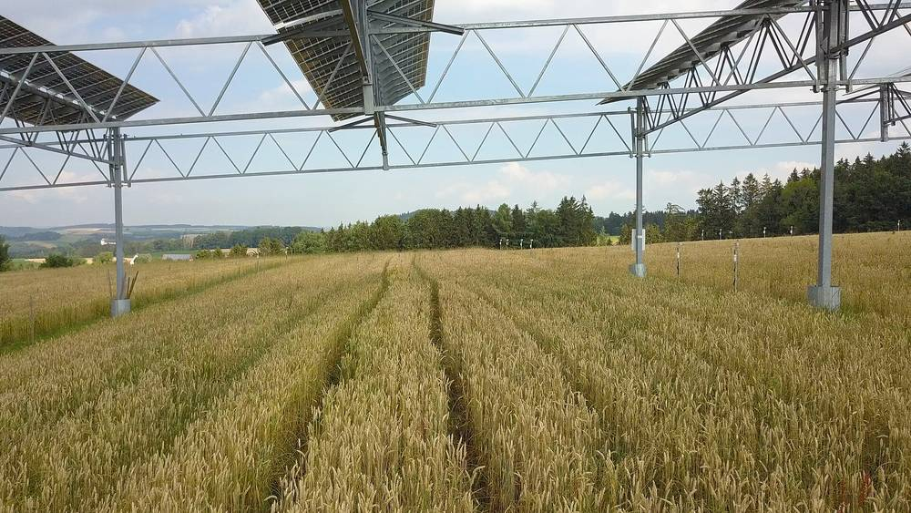

"영농형 태양광에 일반 모듈 허용하면 농사 못 짓는다"…박승옥 창립준비위원장, 에너지공단 7월 자료 정면 반박

영농형태양광법 12월 17일 시행 앞두고 기고…에너지공단이 든 제조라인 부재·자재 수급·단가 상승·규격 유지 근거에 "협소형 모듈이 영농의 조건, 국내 중소업체 생산라인도 추진 중" 주장
박승옥 전국 햇빛나눔 영농형태양광 사회적협동조합연합회 창립준비위원장이 5일 기고를 통해, 정부가 영농형 태양광에 일반(대형 표준) 태양광 모듈을 허용해서는 안 된다고 주장했다. 영농형태양광 지원법은 5월 7일 국회 본회의를 통과해 12월 17일 시행을 앞두고 있으며, 농림축산식품부와 기후에너지환경부가 시행령 등 세부 제도를 설계하고 있다. 박 위원장은 한국에너지공단 신재생에너지센터가 7월 28일 발표한 '영농형 태양광 정책 및 발전방향' 자료가 일반 모듈 허용 근거로 협소형 모듈 제조라인이 없다는 점, 모듈 대면적화 추세로 자재 수급이 어렵다는 점, 협소형 모듈 단가가 오른다는 점, 20~30년 동안 같은 규격을 유지하기 어렵다는 점을 들었다고 소개하며 이를 반박했다. 그는 "영농형태양광에는 영농이 가능하게끔 협소형 모듈을 사용해야 합니다"라며 그늘이 지면 작물 생산량이 줄어 특히 가을 작물에 타격이 크고, 일본의 영농형 가이드라인도 협소형 모듈을 쓰도록 하고 있으며, 국내 중소 모듈업체들이 협소형 생산라인 신설을 추진하고 있다고 주장했다. 또 국내 영농형 실증단지 약 90곳이 대부분 김창한 영농형태양광협회장의 자문을 받아 지어졌고 협소형 모듈과 영농에 맞춘 구조물 기술도 쌓여 있다며, 11월 6일 청주에서 농식품부 장관이 참석하는 '영농형태양광 상생 한마당'에서 모듈 문제를 제대로 다뤄야 한다고 요구했다. 에너지공단과 기후에너지환경부의 입장은 기고에 담기지 않았다.
시민에너지 관점
영농형 태양광은 농지 위에서 농사와 발전을 함께 한다는 약속으로 법이 만들어진 만큼, 모듈 규격은 기술 세부가 아니라 그 약속을 지키느냐를 가르는 문제다. 협소형 모듈은 비싸고 공급이 불안하다는 걱정이 나올 수 있지만, 독일이 영농형 태양광 표준(DIN SPEC 91434)을 따로 만들어 패널 아래 농업 수확을 일정 수준 이상 지키도록 한 것처럼, 기준을 먼저 세우면 시장과 생산라인은 그 기준을 따라온다. 일반 모듈을 넓게 덮으면 발전량은 늘겠지만 농사는 명목이 되고, 농민과 마을 협동조합이 아닌 대형 사업자에게 유리한 구조가 된다. 농식품부와 기후에너지환경부는 시행령에 차광률과 실경작 기준을 모듈 규격과 함께 분명히 담고, 에너지공단은 7월 자료의 근거를 공개해 농민 단체·협동조합과 함께 검증해야 한다.
출처: 프레시안 2026-11-05 박승옥(전국 햇빛나눔 영농형태양광 사회적협동조합연합회 창준위원장, 기고) 원문 보기
「営農型太陽光に一般モジュールを認めれば農業ができなくなる」…パク・スンオク創立準備委員長、エネルギー公団の7月資料に真っ向から反論
営農型太陽光法の12月17日施行を前に寄稿…公団が挙げた製造ライン不在・資材調達・単価上昇・規格維持の根拠に「狭幅モジュールこそ営農の条件、国内中小メーカーも生産ラインを推進中」と主張
全国ヘッピッナヌム営農型太陽光社会的協同組合連合会のパク・スンオク創立準備委員長は5日の寄稿で、政府が営農型太陽光に一般（大型標準）の太陽光モジュールを認めるべきではないと主張した。営農型太陽光支援法は5月7日に国会本会議を通過し、12月17日の施行を控えており、農林畜産食品部と気候エネルギー環境部が施行令など細部の制度を設計している。パク委員長は、韓国エネルギー公団新再生エネルギーセンターが7月28日に発表した「営農型太陽光の政策と発展方向」資料が、一般モジュールを認める根拠として狭幅モジュールの製造ラインがないこと、モジュールの大面積化の流れで資材の調達が難しいこと、狭幅モジュールの単価が上がること、20〜30年にわたり同じ規格を保つのが難しいことを挙げたと紹介し、これに反論した。パク委員長は、営農を可能にするには狭幅モジュールを使わなければならないとし、日陰ができれば作物の収量が落ち、特に秋の作物への打撃が大きいこと、日本の営農型ガイドラインも狭幅モジュールの使用を求めていること、国内の中小モジュールメーカーが狭幅モジュールの生産ライン新設を進めていることを挙げた。さらに国内の営農型実証団地約90カ所の大半がキム・チャンハン営農型太陽光協会長の助言を受けて建てられ、狭幅モジュールや営農に合わせた架台の技術も蓄積されているとして、11月6日に清州で農林畜産食品部長官が出席して開かれる「営農型太陽光相生のつどい」でモジュール問題をきちんと取り上げるよう求めた。エネルギー公団と気候エネルギー環境部の立場は寄稿には含まれていない。
市民エネルギーの視点
営農型太陽光は、農地の上で農業と発電を両立させるという約束のもとに法律がつくられた以上、モジュールの規格は技術的な細部ではなく、その約束を守るかどうかを分ける問題だ。狭幅モジュールは高価で供給が不安定だとの懸念もありうるが、ドイツが営農型太陽光の規格（DIN SPEC 91434）を別に定め、パネルの下での農業収穫を一定水準以上守るよう求めたように、基準を先に立てれば市場と生産ラインはそれに従ってくる。一般モジュールで広く覆えば発電量は増えても農業は名目だけになり、農家や集落の協同組合ではなく大規模事業者に有利な構造になる。農林畜産食品部と気候エネルギー環境部は施行令に遮光率と実耕作の基準をモジュール規格とあわせて明記し、エネルギー公団は7月資料の根拠を公開して農民団体・協同組合とともに検証すべきだ。
出典: プレシアン 2026-11-05 パク・スンオク（全国ヘッピッナヌム営農型太陽光社会的協同組合連合会創立準備委員長、寄稿） 原文を読む
"农光互补若允许普通组件，就种不了地"…朴胜玉筹备委员长正面反驳能源公团7月资料
在《农光互补法》12月17日施行前投稿…针对公团提出的无生产线、材料难采购、单价上涨、规格难维持等理由，主张"窄幅组件才是耕作的前提，韩国中小企业也在推进生产线"
韩国"全国阳光分享农光互补社会合作社联合会"筹备委员长朴胜玉5日投稿主张，政府不应允许农光互补（营农型太阳能）使用普通（大型标准）光伏组件。《农光互补支援法》已于5月7日在国会全体会议通过，将于12月17日施行，农林畜产食品部和气候能源环境部正在设计施行令等细则。朴委员长介绍说，韩国能源公团新再生能源中心7月28日发布的《农光互补政策及发展方向》资料以窄幅组件没有生产线、组件大面积化趋势下材料难以采购、窄幅组件单价上涨、20至30年间难以维持同一规格为由，主张允许使用普通组件，并对此逐一反驳。他主张，要能耕作就必须使用窄幅组件；一旦出现阴影，作物产量就会下降，秋季作物受害尤其严重；日本的农光互补指南也要求使用窄幅组件；韩国中小组件企业正在推进新建窄幅组件生产线。他还表示，韩国约90处农光互补示范基地大多是在韩国农光互补协会会长金昌汉的指导下建成的，窄幅组件和适合耕作的支架技术也已积累起来，并要求11月6日在清州举行、农林畜产食品部长官出席的"农光互补共赢大会"认真讨论组件问题。投稿中没有能源公团和气候能源环境部的立场。
市民能源视角
农光互补的立法前提是在农地上同时进行耕作和发电，因此组件规格不是技术细节，而是决定这一承诺能否兑现的问题。有人会担心窄幅组件价格高、供应不稳，但正如德国另行制定农光互补标准（DIN SPEC 91434），要求板下农业收成保持在一定水平以上那样，只要先立标准，市场和生产线就会随之跟进。用普通组件大面积覆盖，发电量或许会增加，耕作却会流于形式，结构上也会有利于大型企业，而不是农民和村庄合作社。农林畜产食品部和气候能源环境部应在施行令中把遮光率和实际耕作标准与组件规格一并写清楚，能源公团则应公开7月资料的依据，与农民团体和合作社共同检验。
来源: 韩国Pressian 2026-11-05 朴胜玉（全国阳光分享农光互补社会合作社联合会筹备委员长，投稿） 查看原文
"Allow standard modules in agrivoltaics and farming becomes impossible": cooperative federation organiser Park Seung-ok rebuts Korea Energy Agency's July paper
In an op-ed ahead of the Agrivoltaics Act taking effect on Dec. 17, he argues against the agency's reasons of no production lines, supply difficulties, higher prices and keeping specs for decades, saying narrow modules are a precondition for farming and Korean SMEs are building lines
Park Seung-ok, who chairs the preparatory committee for a national federation of agrivoltaic social cooperatives, argued in an op-ed on Nov. 5 that the government must not allow ordinary (large standard) solar modules in agrivoltaic projects. The agrivoltaics support act passed the National Assembly on May 7 and takes effect on Dec. 17, and the agriculture ministry and the Ministry of Climate, Energy and Environment are now drafting its enforcement decree and other detailed rules. Park said a July 28 presentation by the Korea Energy Agency's New and Renewable Energy Center, "Agrivoltaic policy and development direction," cited four grounds for allowing standard modules: there are no production lines for narrow modules, sourcing materials is difficult as modules grow larger, narrow modules cost more, and it is hard to keep the same specification for 20 to 30 years. He rejected each point, saying narrow modules must be used to make farming possible because shade cuts crop yields, especially for autumn crops, that Japan's agrivoltaic guidelines also call for narrow modules, and that Korean small and medium module makers are already moving to build narrow-module lines. He added that most of Korea's roughly 90 agrivoltaic demonstration sites were built with advice from Kim Chang-han, head of the Korea Agrivoltaic Association, and that know-how in narrow modules and farm-friendly mounting structures has built up, and he called for the module issue to be properly addressed at an agrivoltaics "win-win" event in Cheongju on Nov. 6 to be attended by the agriculture minister. The op-ed did not include responses from the Korea Energy Agency or the climate ministry.
Citizen Energy View
The agrivoltaics law was written on the promise that farming and power generation would share the same land, so module size is not a technical detail but the question of whether that promise is kept. Some will worry that narrow modules are costly and hard to source, but just as Germany drew up a dedicated agrivoltaics standard (DIN SPEC 91434) requiring that farm output under the panels be kept above a set level, markets and production lines follow once the standard comes first. Blanketing fields with standard modules may raise output, but farming would become a formality and the structure would favour large developers over farmers and village cooperatives. The agriculture and climate ministries should write shading-rate and actual-cultivation standards into the decree together with module specifications, and the Korea Energy Agency should publish the basis for its July paper and test it alongside farmer groups and cooperatives.
Source: Pressian 2026-11-05 Park Seung-ok (chair of the preparatory committee, National Sunshine-Sharing Agrivoltaics Social Cooperative Federation; op-ed) Read the original